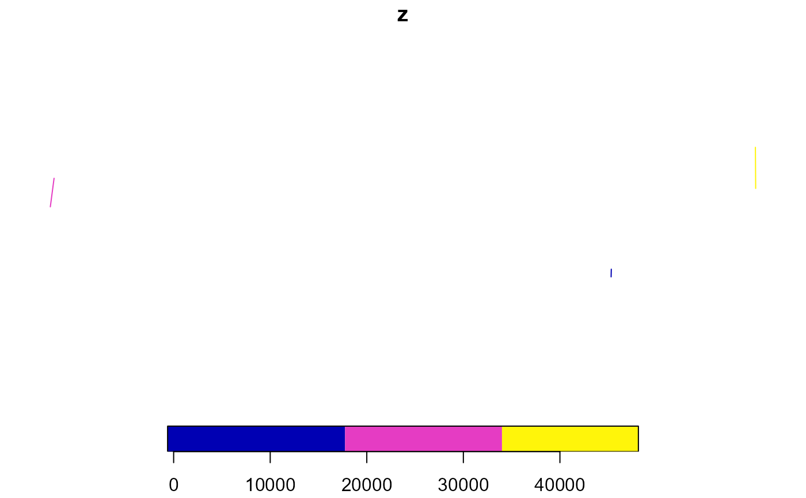
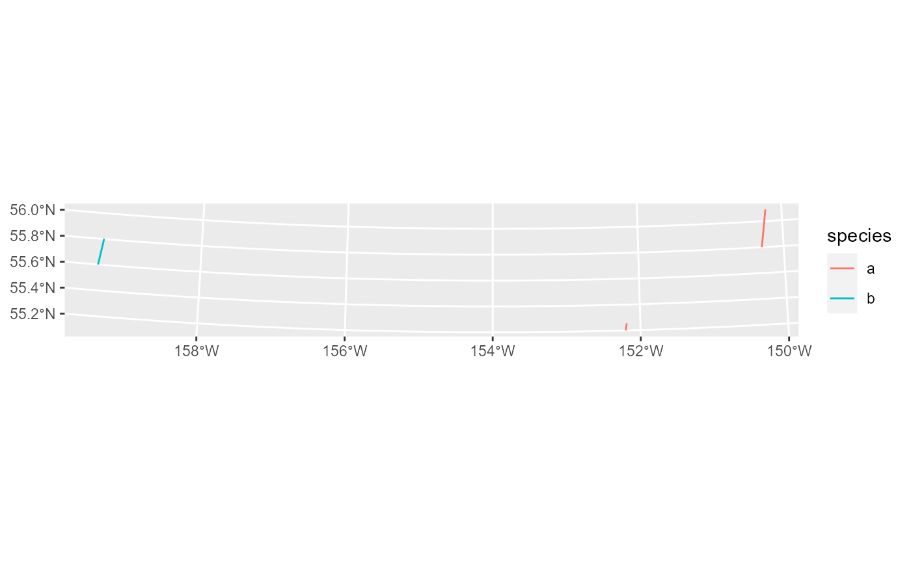
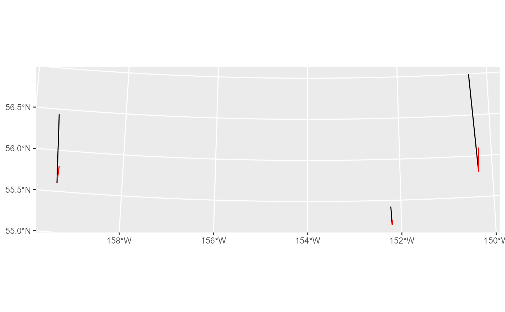

build_sf_sticks
build_sf_sticks.RdAccepts xyz data (for example, longitude/latitude/abundance) and returns a vertical 'stick'
at each position. Sticks are returned as sf LINESTRING objects.
These objects can be plotted using ggplot2::geom_sf() or base plot.
#'
Usage
build_sf_sticks(
x,
y,
z,
group_variable = NULL,
return_df = NULL,
rotation = 5,
bar_scale = 0.5,
crs = "EPSG:3338"
)Arguments
- x
x- position
- y
Y- position
- z
Abundance value (the value that will be used to scale sticks)
- group_variable
If specified, will specify the group for each stick; this can be used to identify sticks by group.
- return_df
If specified, will include all columns from the original dataframe in the returned object. Only one of 'group_variable' or 'return_df' should be specified.
- rotation
Rotation of the sticks in degrees from the vertical. Default is 5 degrees. 0 = no rotation; positive values rotate bars in a clockwise direction.
- bar_scale
The relative size of sticks. Default is ~1/2 of total plot height.
- crs
If specified, The coordinate reference system (CRS) into which sticks will be projected. This relies on the sf::st_crs function- make sure you are using a valid CRS argument. If not specified, no CRS will provided.
Examples
dat = data.frame('x' = c(-152.2, -150.3, -159.4),
'y' = c(55.2, 55.8, 55.6),
'z' = c(7500,40000, 28000),
'species' = c('a', 'a', 'b'))
#sticks can be plotted with ggplot2::geom_sf(),
#and Coordinate Reference System (CRS) conversions are handled by sf::st_crs()
library(ggplot2)
#> Warning: package 'ggplot2' was built under R version 4.2.1
library(sf)
#> Warning: package 'sf' was built under R version 4.2.1
#> Linking to GEOS 3.9.1, GDAL 3.4.3, PROJ 7.2.1; sf_use_s2() is TRUE
#you have to provide x,y,z at minimum
sticks = build_sf_sticks(x = dat$x, y = dat$y, z = dat$z)
#plot with ggplot2 geom_sf()
ggplot() +
geom_sf(data = sticks)
#or with base r plotting
plot(dat)

#the rotation (from 0) can be specified (in degrees from 0-360). If not specified,
#sticks will be rotated to 5 degrees
sticks = build_sf_sticks(x = dat$x, y = dat$y, z = dat$z, rotation = 15)
ggplot() +
geom_sf(data = sticks)

#If a CRS is not specified, none will be assigned; if one is specified,
#it will be set using sf st_crs()
sticks = build_sf_sticks(x = dat$x, y = dat$y, z = dat$z, rotation = 15, crs = 3338,
group_variable = dat$species)
ggplot() +
geom_sf(data = sticks, aes(color = species))

#sticks are automatically scaled so that the largest abundance value
#this can be modified with bar_scale argument
sticks = build_sf_sticks(x = dat$x, y = dat$y, z = dat$z, rotation = -5, bar_scale = 2)
sticks2 = build_sf_sticks(x = dat$x, y = dat$y, z = dat$z, rotation = 5, bar_scale = .5)
ggplot() +
geom_sf(data = sticks)+
geom_sf(data = sticks2)
